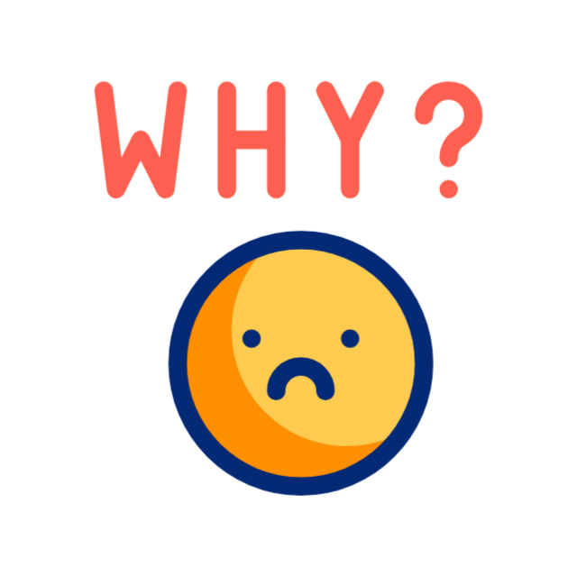

Welcome to DevOps World
DevOps is transforming how we build, test, and deliver software. Join us to explore the magic of automation, collaboration, and innovation!
Explore the Lifecycle
What is DevOps?ü§î
➡️ DevOps is a set of practices that aims to "automate and integrate" the processes between software development. The goal is to shorten the development lifecycle and provide continuous delivery with high software quality. DevOps culture emphasizes collaboration, communication, and integration between teams to "accelerate the development" and release of software.

Key Features of DevOps
- Continuous Integration: Developers regularly merge their code changes into a shared repository, automating the build and testing process.
- Continuous Delivery: Ensures that software is always in a deployable state, allowing faster and more reliable software releases.
- Collaboration & Communication: DevOps encourages collaboration between development, QA, and operations teams to eliminate silos and improve efficiency.
- Automated Testing & Deployment: Testing and deployment are automated to ensure consistent and error-free software delivery.
- Infrastructure as Code: Infrastructure is managed through code, allowing automated provisioning, configuration, and monitoring of environments.
 DevOps
- Faster Delivery
- Improved Quality
- Better Collaboration
- Better Quality & Reliability
- Scalability